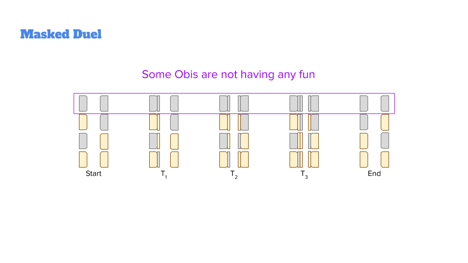
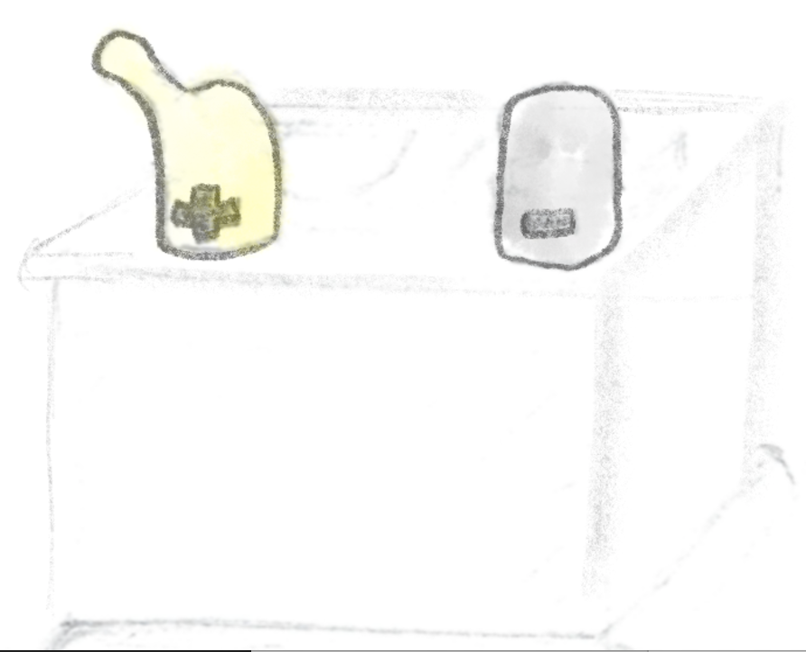
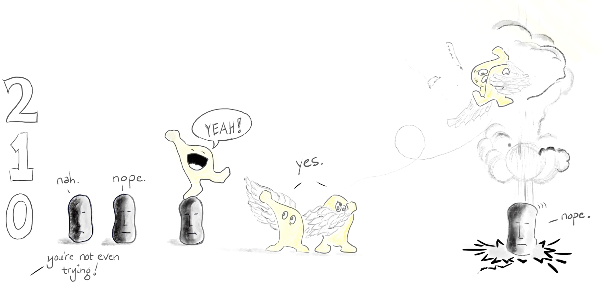
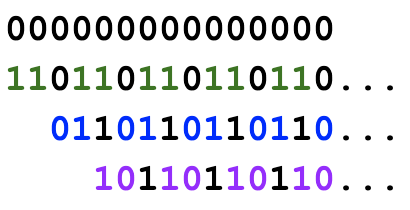

Now that I have procrastinated enough distinguished zeros from ones in a way that allows them to do some work, it's time to solve the original problem:
I had planned to build on the judo metaphor for XOR from Part 1 to show how XOR Swap works. I considered showing a series of duels, with Obis donning fencing masks to represent the intermediate state changes. I suppose I was mainly looking for an excuse to introduce a new hero, "Obi 1":
The duel metaphor was a productive in one way: it made it obvious that two zeros would never generate any other combination, no matter how many times we apply XOR:
 It didn't generate much insight into the other three cases, though, and still required almost as much mental accounting as the original Wikipedia explanation, so I abandoned it.I also tried out and rejected a kind of Obi battery — ("Maybe the only state that can generate current has both positive and ground terminals? That's not quite right..."):
I then imagined a kind of Icarus scenario, where multiple ones lead to some kind of hubristic failure and a return to earth:
I like this one for its poetry, but the metaphor is still not quite right.
A novel way of looking at what happens with XOR Swap is to create a Fibonacci-like sequence where each bit is the output of XOR applied to the two previous bits. This perspective is promising.
The zeros do nothing. All three of the other configurations recur like the bommm-bop-bop of a waltz or the stomp-stomp-clap of "We Will Rock You", depending on where you start. This simplifies things a great deal! Now there are just two outcomes: nothing happening if we start with all zeros, or the same repeating sequence for all three other start states.
I like the switch metaphor! It explains each of the four original cases, and even lets us extend our intuition beyond two inputs. The start state of the toggle is off:
| input | result |
|---|---|
| 0 ⊕ 0 | Two nobis standing around doing nothing; nothing happens, the button stays off. |
| 1 ⊕ 0 | A single yobi hits the switch; it stays on. |
| 0 ⊕ 1 | Same as above. |
| 1 ⊕ 1 | Both yobis hit the switch, turning it on, then immediately back off. |
| 1 ⊕ 0 ⊕ 1 ⊕ 1 ⊕ 0 ... | What if we have more than two? XOR tests whether the sum is odd. |
XOR, like the Fibonacci sequence, is a kind of addition. If you start with zeros, you will only get zeros. If you start with one or more ones, you get a cycle with two states — count up to one, then start over.
Playing with obis and XOR gives me several new perspectives:
One consequence of this line of thinking is that, whatever the origin of its design, the symbol for XOR now seems deeply meaningful:
XOR is addition mod 2: addition, in a circle.
The original challenge was to Swap two numbers in place without using a temporary variable. With help from anthropomobi and the switch metaphor, I can solve the problem using XOR Swap as originally proposed, but with a deeper understanding of why it works:
And of course there's an easy way to do this in Python via tuple unpacking: